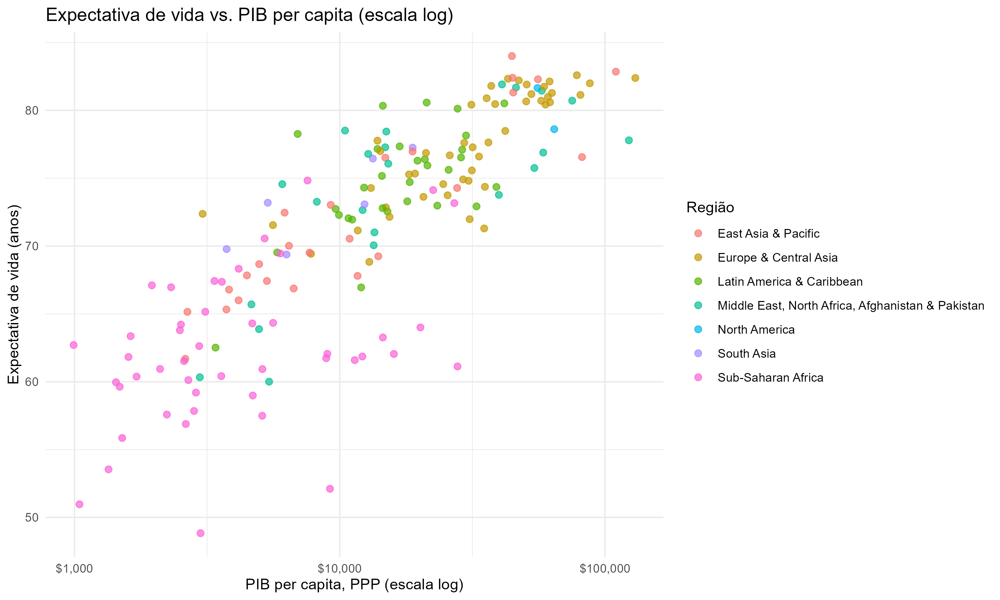
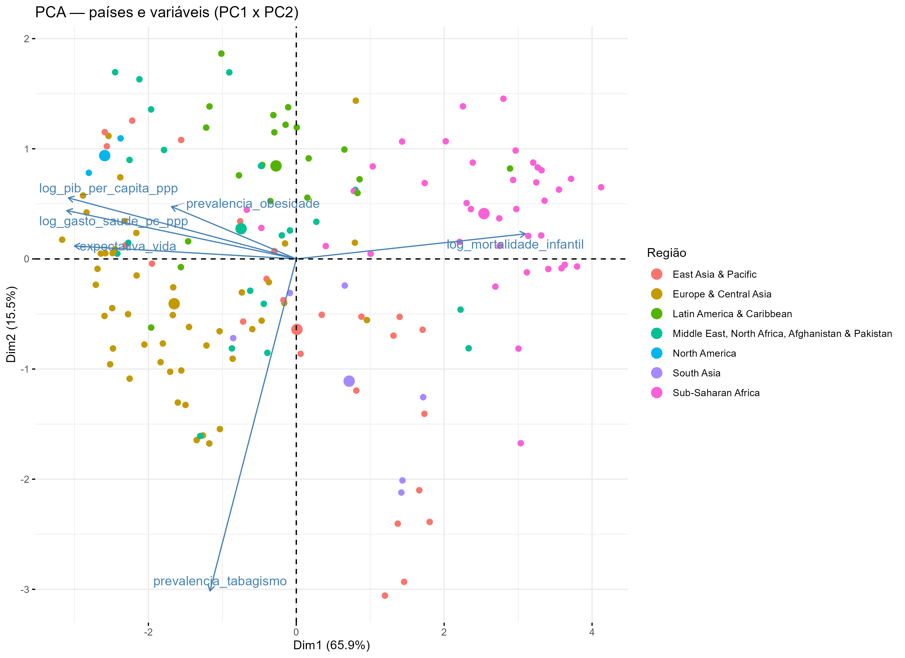
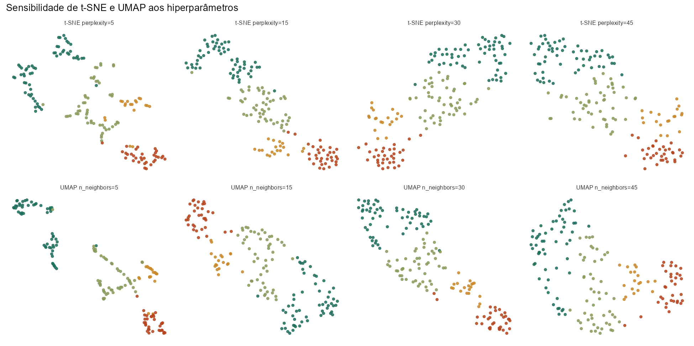
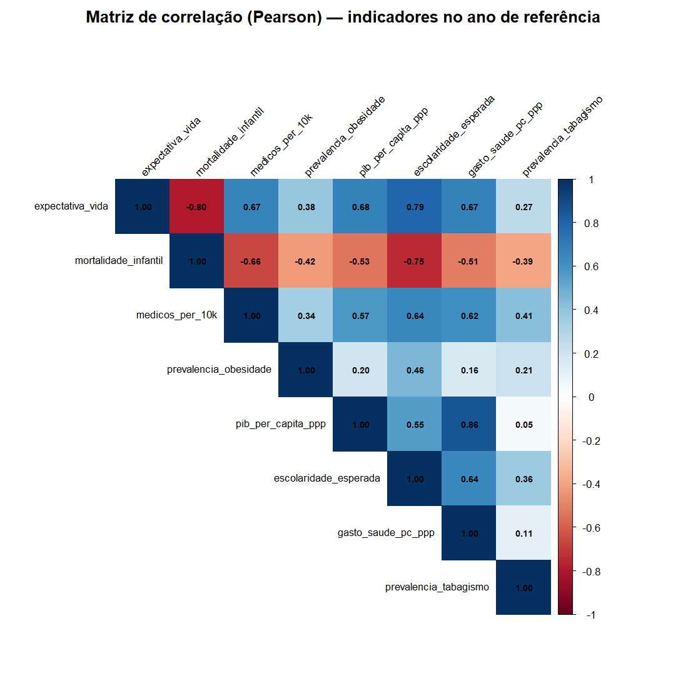

159 países · dados WHO & World Bank · corte transversal de 2015
Renda prevê boa parte da saúde
de um país. Não toda.
Como desigualdades socioeconômicas, demográficas e de acesso à saúde se relacionam aos diferentes resultados de saúde entre países — e quais nações performam melhor ou pior do que seu nível de desenvolvimento sozinho explicaria.
Explorar os dadosVisão geral
O panorama global em números
Médias e totais entre os 159 países com dados completos em 2015, o ano com maior cobertura simultânea dos indicadores. Os cartões resumem o mundo; as seções seguintes mostram como os países se distribuem em torno dessas médias.
Expectativa de vida média
—
anos, ao nascer
Mortalidade infantil média
—
por 1.000 nascidos vivos, <5 anos
Gasto em saúde médio
—
per capita, PPP (US$)
Países analisados
—
com os 7 indicadores do núcleo completos

Comparar países
Como esses países se comparam?
Escolha até 4 países para comparar indicadores, classificação e evolução ao longo do tempo.
Perfis de saúde
Quatro perfis de desenvolvimento e saúde
Agrupamento estatístico (K-Means, K=4) sobre 6 indicadores de saúde e desenvolvimento, padronizados. Cada grupo é descrito pelo perfil quantitativo que mais o diferencia dos demais, não por juízo de valor. Esta seção tem três ferramentas: o PCA resume os países em 2 eixos; a matriz mostra as 6 variáveis país por país; e o comparador testa se três técnicas de projeção mostram os mesmos grupos.

As 6 variáveis, país por país
O gráfico acima resume cada país em 2 dimensões (PC1/PC2). Esta matriz mostra as 6 variáveis originais lado a lado — cor = quão favorável à saúde é o valor do país em relação à média (verde = mais favorável, laranja = menos), já na mesma transformação usada no PCA. Em mortalidade infantil, obesidade e tabagismo, valor alto é desfavorável, então a escala é invertida (asterisco no título da coluna). Passe o mouse sobre uma linha para ver os valores. O que ver: nos grupos de cima, expectativa de vida, mortalidade, renda e gasto são quase todos verdes; nos de baixo, laranja, formando um gradiente suave. Obesidade e tabagismo não seguem esse gradiente: variam dentro de cada grupo, e o grupo de menor renda tem obesidade baixa (verde).
Comparar técnicas de projeção
Os mesmos 159 países projetados em 2 dimensões por três técnicas — PCA, t-SNE e UMAP — e coloridos pelos grupos de diferentes algoritmos de clusterização. Troque o algoritmo para ver quanto a "formação de grupos" depende do método, e destaque um país para achá-lo nas três projeções. Os eixos de t-SNE e UMAP não têm interpretação: só a vizinhança local importa. Os grupos-padrão são definidos no espaço original de 6 dimensões, e não nas coordenadas da projeção, para não favorecer nenhuma técnica por construção.
- Nenhuma técnica vence em tudo. O PCA tem a maior continuity (0,977); o t-SNE, a maior trustworthiness (0,982 em uma execução; 0,977 na média de 10 sementes); o UMAP tem a melhor consistência de vizinhos e silhueta na média de 10 sementes, mas a diferença para o t-SNE é pequena (cerca de 1 a 2 desvios-padrão entre sementes).
- Projeções não lineares exageram a separação. A silhueta 2D (0,44 a 0,50) é maior que a do espaço original (0,33): grupos que em 6D se tocam parecem mais separados no plano.
- Os parâmetros importam. Reagrupar o plano 2D e comparar com os grupos de 6D dá ARI de 0,52 a 0,90 no t-SNE e de 0,56 a 0,88 no UMAP, conforme a perplexity ou o número de vizinhos. O PCA, sem parâmetros, dá 0,96.
- O algoritmo de agrupamento importa. Em relação ao K-Means, o ARI é 0,72 (Ward), 0,53 (PAM), 0,33 (GMM) e 0,33 (HDBSCAN, que encontra 2 grupos e deixa 38 países sem grupo). O número de grupos é uma propriedade do método, não dos dados.
- O tabagismo é a variável que mais molda os grupos: sem ele, o agrupamento muda bastante (ARI 0,60). Já a mortalidade infantil é quase redundante com a expectativa de vida (ARI 0,96 ao removê-la).

O que explica a saúde
O que está associado à expectativa de vida?
Resultado de um modelo de regressão múltipla: mostra associação estatística, não causa e efeito. Cada coeficiente diz quanto a expectativa de vida muda, em anos, quando aquele fator aumenta e todos os outros ficam fixos.

Esperado vs. observado
Quem performa acima ou abaixo do esperado?
Cada ponto compara a expectativa de vida observada de um país com a que o modelo da seção anterior previu, dado seu perfil socioeconômico.
Mais acima do esperado
Mais abaixo do esperado
Mapa interativo
Onde cada indicador é mais forte ou mais fraco
Selecione um indicador e um ano para colorir o mapa. Filtre por região ou perfil de cluster, e clique em um país para ver o perfil detalhado.
Clique em um país no mapa para ver o perfil detalhado aqui.
Metodologia
Como esta análise foi feita
Resumo das decisões metodológicas de cada etapa. A documentação completa, com todos os números e diagnósticos, está no arquivo docs/METODOLOGIA.md do repositório.
Nove indicadores de duas fontes: WHO Global Health Observatory (expectativa de vida, mortalidade infantil, médicos por 10 mil habitantes, prevalência de obesidade) e World Bank (PIB per capita PPP, escolaridade esperada, população, gasto em saúde per capita, prevalência de tabagismo).
Gasto em saúde e tabagismo foram migrados da WHO para o World Bank durante a coleta: os códigos nativos da WHO (base GHED) retornavam 0 registros por viverem em portais regionais separados, não no endpoint global usado no pipeline.
Coleta via API para toda a janela 2000–2022, com busca de indicadores por nome (não códigos fixos) para resistir a mudanças na API da WHO, já anunciadas pela própria organização.
Países combinados entre as duas fontes por código ISO3, não por nome em texto livre — WHO e World Bank grafam países de forma diferente. Duplicidades (desagregação por sexo, revisões de estimativa) resolvidas priorizando "ambos os sexos" e a publicação mais recente.
Núcleo vs. secundários: médicos per capita e escolaridade têm cobertura bem mais fraca que os outros 7 indicadores — tratados como secundários (usados só em checagens de robustez) para não reduzir a amostra principal de 159 para 74 países.
2015, com 159 países — o ano com maior cobertura simultânea dos 7 indicadores do núcleo (empatado com 2020, mas 2020 foi descartado por distorção da pandemia nos dados de mortalidade e expectativa de vida).
Modelo: expectativa de vida em função de log(PIB per capita), obesidade, tabagismo, log(população) e log(gasto em saúde). R² ajustado = 0,728, N = 159.
PIB per capita sustenta associação forte mesmo após corrigir erros-padrão para heterocedasticidade (HC3). Gasto em saúde mostrou associação apenas marginal após essa correção (p ≈ 0,07) — grande parte da significância inicial era artefato da heterocedasticidade nos resíduos, não um efeito robusto.
PIB per capita e gasto em saúde são fortemente correlacionados (r = 0,86, VIF ≈ 10) — uma especificação alternativa com gasto em saúde "residualizado" (ortogonal ao PIB) confirmou o mesmo resultado sem o problema de colinearidade.
Os 6 indicadores de perfil (expectativa de vida, mortalidade infantil, obesidade, PIB, gasto em saúde e tabagismo) são padronizados, com log em mortalidade, PIB e gasto. PC1 (65,9% da variância) é um eixo geral de desenvolvimento; PC2 (15,5%) é quase exclusivamente tabagismo, um eixo praticamente independente do resto. Reter 2 componentes é uma decisão de julgamento (o critério de Kaiser sugeriria 1).
4 clusters via K-Means, escolhidos sobre o k=2 "estatisticamente ótimo" (maior silhouette) por oferecerem perfis mais ricos e diferenciados. Comparação com clusterização hierárquica mostrou forte concordância nos extremos e mais divergência no grupo de renda média — sinal de que essa fronteira é um gradiente contínuo, não uma quebra nítida.
Os mesmos países são projetados em 2 dimensões por três técnicas: PCA (linear, determinística, eixos interpretáveis), t-SNE e UMAP (não lineares, preservam vizinhanças locais, dependem de parâmetros e sementes, eixos sem interpretação). Os parâmetros-padrão são perplexity 15 (t-SNE) e n_neighbors 15 (UMAP).
A qualidade é medida, não só vista: trustworthiness (poucos "falsos vizinhos" no plano), continuity (poucos vizinhos reais separados), fração dos 10 vizinhos mais próximos que são do mesmo grupo e silhueta no plano. t-SNE e UMAP foram repetidos com 10 sementes e com perplexity e n_neighbors em 5, 15, 30 e 45.
Cinco algoritmos foram comparados no espaço original: K-Means, hierárquico de Ward, PAM (K-medoides), misturas gaussianas (GMM) e HDBSCAN (por densidade, sem fixar K, com pontos de ruído). A concordância é medida pelo índice de Rand ajustado (ARI: 1 = idênticos, perto de 0 = acaso). Como não existe gabarito de grupos nestes dados, o ARI compara métodos entre si, não mede acerto.
Para avaliar o papel de cada variável, removeu-se uma por vez (K-Means, K=4) e, separadamente, acrescentaram-se escolaridade e médicos, na subamostra de 74 países que os têm: o agrupamento muda (ARI 0,70) e a separação piora (silhueta de 0,376 para 0,324).
Resultados de t-SNE, UMAP e HDBSCAN dependem de sementes e de versões de pacote. Em outro ambiente, o HDBSCAN encontrou 3 grupos e 46 países de ruído, em vez de 2 e 38. Por isso o repositório oferece o renv para travar as versões.
A regressão, o PCA e o K-Means foram refeitos para 2010 (158 países). A estrutura se mantém: R² ajustado 0,683 (0,728 em 2015), PC1 e PC2 com 66,0% e 16,0%, PIB significativo nos dois anos. O gasto em saúde é significativo em 2010 (p = 0,042) mas só marginal em 2015 (p = 0,069), o que mostra que esse resultado é frágil.
Classificação baseada em resíduos studentizados do modelo de regressão (não resíduo bruto, para corrigir a heterocedasticidade já detectada), com limite de ±1 desvio-padrão — critério estatístico padrão (~68%/16%/16%), não um corte arbitrário.
Os países mais "abaixo do esperado" se concentram no Sul da África (Eswatini, Lesoto, Botsuana...) — coincide com a região historicamente mais atingida pela epidemia de HIV/AIDS, um fator de carga de doença que nenhuma variável do modelo captura. Interpretado como validação do modelo, não como falha.
- Corte transversal de um único ano (2015) — não captura tendências individuais por país.
- Amostra de 159 de ~217 países reconhecidos, por exigência de cobertura simultânea.
- Desenho observacional — correlação não implica causalidade em nenhuma análise.
- Ausência de variáveis de carga de doença específica (HIV/AIDS, conflitos, desastres).
- Escolaridade (World Bank) tem cobertura em colapso após 2018; tabagismo tem ao menos um ano (2019) sem nenhum dado.
- Retenção de 2 componentes no PCA e K=4 na clusterização são decisões de julgamento documentadas, não resultados puramente algorítmicos.
- A comparação de projeções usa um único conjunto de dados (159 países, 6 variáveis); as métricas de t-SNE e UMAP variam com parâmetros e sementes.